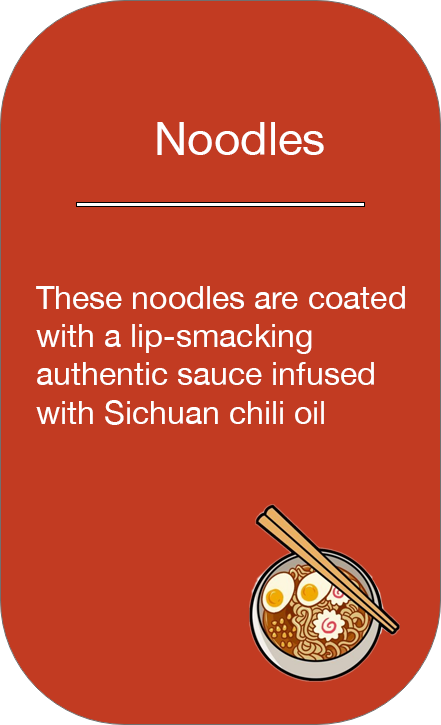
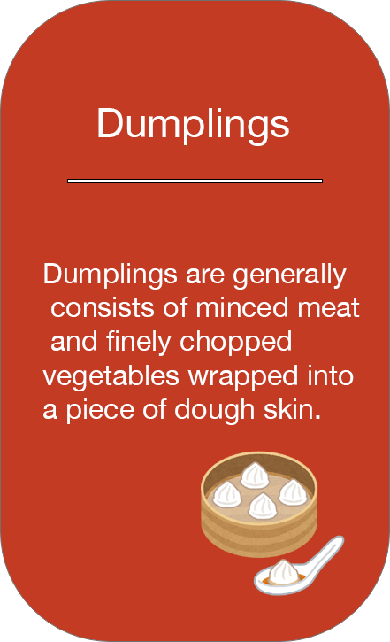

Type of Chinese Food
Chinese cuisine is an important part of Chinese culture and includes cuisines originating from China. Because of the Chinese diaspora and historical power of the country, Chinese cuisine has influenced many other cuisines in Asia and beyond, with modifications made to cater to local palates. Chinese food staples such as rice, soy sauce, noodles, tea, chili oil, and tofu, and utensils such as chopsticks and the wok, can now be found worldwide.


